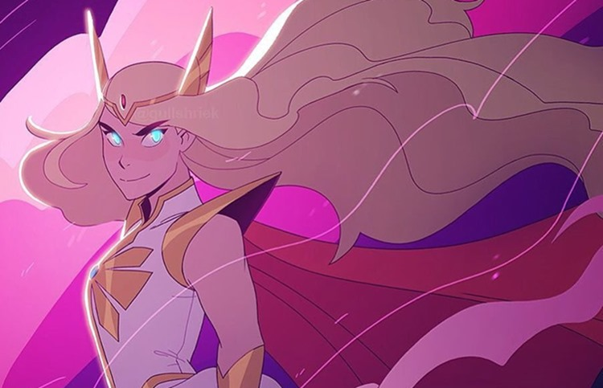
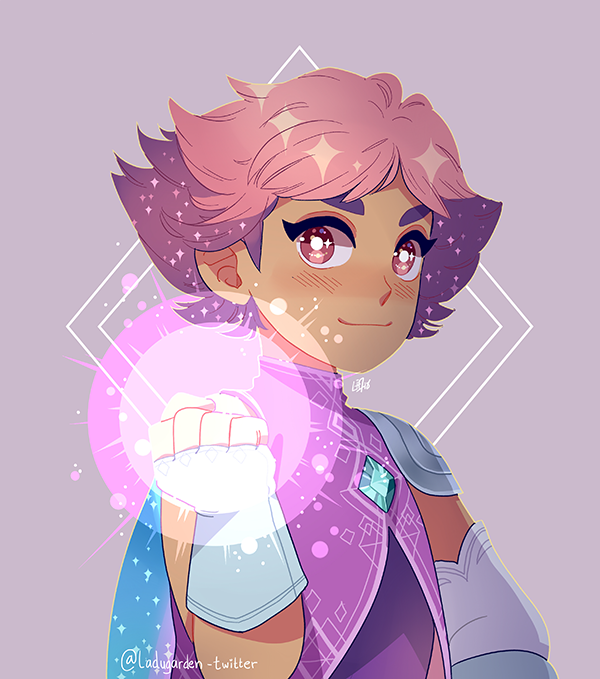
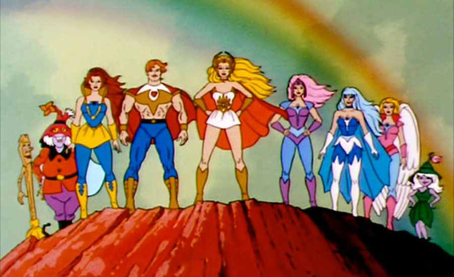

She-Ra e as Princesas do Poder conta a história de uma órfã chamada Adora, que deixa para trás sua antiga vida quando descobre uma espada mágica que a transforma na mítica princesa guerreira She-Ra. Ao longo do caminho, ela faz uma nova família com a Rebelião enquanto junta um grupo de princesas mágicas na luta contra o mal.
Clique abaixo para mais informações:
She-Ra e as Princesas do Poder é uma série de televisão de aventura, de fantasia e de ciência americana desenvolvida por Noelle Stevenson e produzida pela DreamWorks Animation. Ela um reboot da série animada Filmation, She-Ra: Princesa do Poder. Ela está começou a ser transmitinda na Netflix no dia 13 de novembro de 2018.
Clique na imagem para mais informações:
She-Ra: A Princesa do Poder é uma série estadunidense de desenho animado, produzida em 1985 pela Filmation. Sendo um spin-off da série de animação He-Man e os Defensores do Universo, também da Filmation, She-Ra era voltada principalmente para o público feminino jovem para complementar a popularidade de He-Man com os jovens do sexo masculino.
Clique abaixo para mais informações:
A série esta no momento disponiver para stream na NETFLIX
Clique abaixo para conferir:
Criado por:
César Francisco